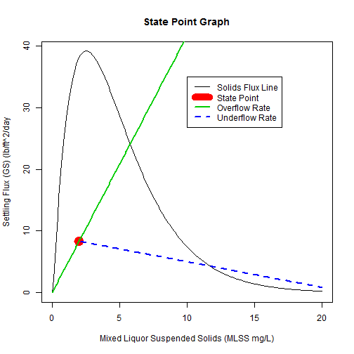
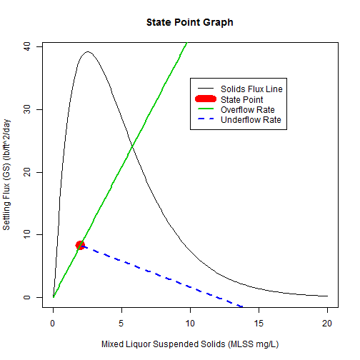

A Good and a Bad Wastewater Operator's Fate


Hero or Goat
Hero or Goat

Bugs going out of the plant to a stream. An operator's nightmare
If the green underflow line crosses the black Solids Flux Line, the Return Activated Sludge (RAS) flow needs to be increased. If the Red State Point is above the black line, you need to pull out every trick because your solids are almost destined to go into the river.
A Bad Day
Q_RAS=1

RAS rate was increased, so the solids will stay in the plant.
RAS_Q=1+RAS_Q
